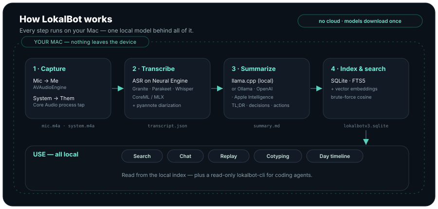
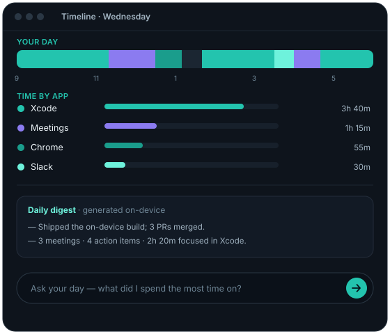

Lawyers & consultants
Privileged calls stay privileged. No vendor agreement to chase, no processor to disclose — the audio never leaves your machine.
100% on-device · Open source · Free
LokalBot records both sides of the call — no bot joining — transcribes it, and writes the recap, entirely on your Mac. Then it keeps going: autocomplete in any app, voice typing, and a private timeline of your day. No account, no cloud, no subscription.
$ # record → transcribe → summarize, then: $ sudo lsof -i -nP | grep LokalBot $ # no output. zero connections.
Prove it
Every notetaker claims to care about privacy. LokalBot's claim is checkable: run Little Snitch or lsof through an entire meeting — record, transcribe, summarize — and watch the network graph stay flat.
Who it's for
If your calls are privileged, regulated, or under NDA, a cloud notetaker isn't a preference — it's a policy question. LokalBot removes the question: there is no third party.
Privileged calls stay privileged. No vendor agreement to chase, no processor to disclose — the audio never leaves your machine.
Session notes without shipping a word to a transcription vendor. There's no third-party processor to vet, because there isn't one.
Board calls, fundraising, M&A, unreleased products. The notes live on the laptop they were spoken into.
Legal departments increasingly block cloud notetakers. LokalBot gives yours nothing to review — nothing is uploaded.
Features
Detects Zoom, Teams, Meet, Slack, Webex, and FaceTime, then captures you and them on two synced tracks. When the call ends, a local model writes a TL;DR with decisions and action items.
Parakeet runs at roughly 190× realtime on the Neural Engine. Switch to Whisper for 99 languages with word-level timestamps.
Full-text and meaning-based search across transcripts, summaries, and on-screen text. Click a hit to play from that second.
A private timeline of apps and meetings, plus a generated daily digest. Ask your day a question in plain language.
Optional screenshots are AES-GCM encrypted and auto-delete after 14 days. Password fields and excluded apps are never read.
lokalbot-cli gives agents read-only access to the meeting library. JSON by default.
$ lokalbot-cli search "auth refactor" $ lokalbot-cli get latest --include summary
How it works

LokalBot watches for calls and starts recording both sides on its own, or you start it from the menu bar.
On-device models turn the audio into a labeled transcript and a structured recap the moment the call ends.
Everything lands in a local library you can search, replay, and hand to your tools. Nothing is uploaded.
Cotyping
Ghost text appears as you type in almost any app. Press Tab to accept a word or the whole line. It runs on the same local model as your summaries, so nothing you write leaves the Mac.
Dictation
Hold ⌥ Space in any app and talk. LokalBot pauses your music, shows a live transcript in a floating pill, and pastes the words at your cursor — transcribed by the same on-device model as your meetings.

Day timeline
LokalBot quietly notes which app and window is in front, then builds a private timeline of your day and a one-click digest of what you actually worked on. Ask it anything in plain language — all from on-device activity, nothing uploaded.
Recommended models
Sensible defaults, recommended right in the app and downloaded once — no API keys. Prefer something else? Point any task at another local model, Ollama, or an OpenAI-compatible endpoint.
Compare
Cloud notetakers are polished products with one structural problem: your conversations end up on their servers. LokalBot's answer isn't a policy — it's an architecture.
| Feature | LokalBot | Cloud notetakers |
|---|---|---|
| Where the AI runs | On your Mac — Neural Engine + local llama.cpp | Vendor servers, often via third-party AI providers |
| Your audio & transcripts | Never leave the device | Uploaded and processed in the cloud |
| Account required | None | Account, usually a subscription |
| Price | Free, open source (GPLv3) | Free tiers, then roughly $8–35 per user / month |
| Source code | Public — read every line | Closed |
Download
A signed early-access app. Models download on first run, then it works fully offline.
Download for macOS.dmg installer · all releases and notes
Prefer to build it yourself?
$ git clone https://github.com/stevyhacker/lokalbot.git $ cd lokalbot $ xcodegen generate && open LokalBot.xcodeproj
Questions
Your audio, transcripts, and summaries never leave the device. The only network calls are optional: downloading a model once, or pointing summaries at a backend you choose yourself.
Yes. No account, no subscription, no telemetry. The full source is on GitHub, and you can build it yourself.
Apple Silicon Macs (M1 and later) running macOS 15.0 or newer. The on-device models lean on the Neural Engine, MLX, and Metal.
Your microphone is one track, labeled Me. A Core Audio tap on the meeting app is the other, labeled Them. That split gives you speaker labels for free.
Yes. Use the built-in llama.cpp runtime with any downloaded GGUF model, or point LokalBot at Ollama, any OpenAI-compatible server, or Apple Intelligence.
Only if you turn on screenshots. They are encrypted on disk and deleted after 14 days by default. Password fields and excluded apps are never captured.